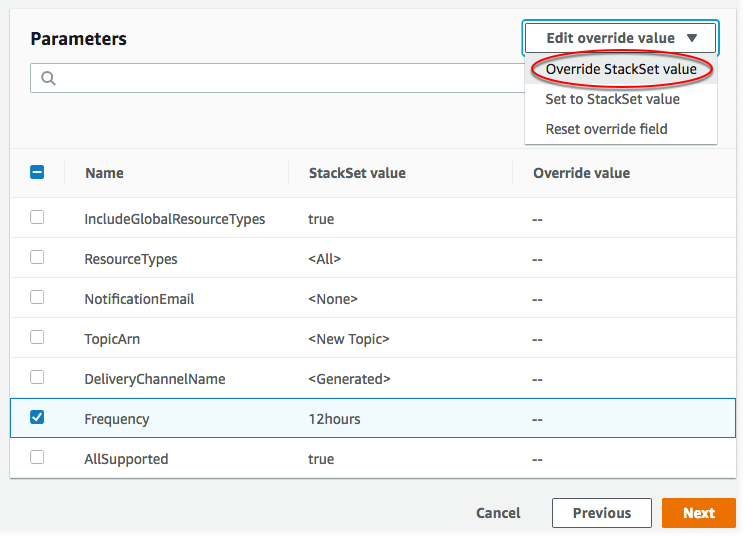

本文為英文版的機器翻譯版本，如內容有任何歧義或不一致之處，概以英文版為準。
覆寫堆疊執行個體上的參數
在某些情況下，您可能會希望特定區域或帳戶中的堆疊執行個體，擁有不同於堆疊集本身指定的屬性值。例如，您可能想要根據帳戶用於開發或生產，為指定的參數指定不同的值。針對這些情況， AWS CloudFormation 可讓您依據帳戶與區域覆寫堆疊執行個體中的參數值。您可以先在建立堆疊執行個體時覆寫範本參數值，也可以覆寫現有堆疊執行個體的參數值。您只能將之前在堆疊執行個體中覆寫的參數，設定回堆疊集中指定的值。
參數值覆寫套用至您選取之帳戶和區域中的堆疊執行個體。在堆疊集更新期間，針對堆疊執行個體覆寫的任何參數值皆不會更新，而是會保留其覆寫值。
您只能覆寫堆疊集中指定的參數值，若要新增或刪除參數本身，您必須更新堆疊集範本。如果您將參數新增至堆疊集範本，那麼在您可以覆寫堆疊執行個體中的該參數值之前，您必須先以堆疊集之中指定的新參數與值來更新所有堆疊執行個體。一旦所有堆疊執行個體皆以新參數完成更新，您就能視需要覆寫個別堆疊執行個體中的參數值。
若要了解如何在建立堆疊執行個體時覆寫堆疊集參數值，請參閱 將堆疊新增至堆疊集。
使用覆寫堆疊執行個體上的參數 AWS Management Console
請在以下位置開啟 AWS CloudFormation 主控台。
https://console.aws.amazon.com/cloudformation -
在導覽窗格中，選擇StackSets。在 StackSets 頁面上，選取您剛才在建立堆疊集中建立的堆疊集。在此逐步教學中，我們建立了名為
my-awsconfig-stackset的堆疊集。 -
選取堆疊組合後，從「動作」功能表選擇「覆寫 StackSet參數」。

-
在 Set deployment options (設定部署選項) 頁面上，針對您要覆寫參數的堆疊執行個體，提供其所在的帳戶和區域。
AWS CloudFormation 將在第一個區域內的指定帳戶中部署堆疊，然後繼續下一個，依此類推，前提是區域的部署失敗不超過指定的失敗容忍。
-
[自我管理許可] 對於 Deployment targets (部署目標)，選擇 Deploy stacks in accounts (在帳戶中部署堆疊)。貼上在 建立堆疊集 中用來建立堆疊集的部分或全部目標帳戶 ID。
[服務管理許可] 對於 Deployment targets (部署目標)，選擇要部署到組織中的哪些帳戶。
-
針對 Deployment regions (部署區域)，新增一或多個區域，其中您已部署此堆疊集的堆疊執行個體。
如果您新增多個區域，則 Specify regions (指定區域) 下的區域順序決定其部署順序。
-
針對 Deployment options (部署選項)：
-
針對 Maximum concurrent accounts (同時使用的帳戶上限)，保留 Number (數值) 和 1 的預設值。
這表示一次只會在一個帳戶中 AWS CloudFormation 部署您的堆疊。
-
針對 Failure tolerance (容錯能力)，保留預設值 Number (數字) 和 0。
這表示在目前區域中 AWS CloudFormation 停止部署之前，最多一個堆疊部署可能會在其中一個指定的區域中失敗，並取消其餘區域的部署。
選擇下一步。
-
-
-
在「指定覆寫」頁面上，核取「頻率」參數，然後從 「編輯覆寫 StackSet 值」功能表中選擇「覆寫值」。
 -
在覆寫 StackSet 參數值中，為頻率參數選取 6 小時，然後選擇儲存變更。您指示 AWS CloudFormation 覆寫 Frequency (頻率) 參數值，並針對指定區域中指定帳戶的所有堆疊執行個體使用 6hours (6 小時)。選擇下一步。
注意
若要將任何取代的參數設定回使用堆疊集合中指定的值，請核取所有參數，然後從 「編輯取代 StackSet值」選單中選擇「設定為值」。這麼做會您更新堆疊執行個體時，移除所有覆寫的值。
-
在 Review (檢閱) 頁面上，檢視您的選擇。請注意，Frequency (頻率) 參數會在 Override value (覆寫值) 欄中顯示一個值，指示其值已在堆疊層級覆寫。
在您可以覆寫這些堆疊執行個體的參數前，必須填入 Capabilities (功能) 區域中的核取方塊，確認您使用堆疊集所建立的一些資源可能需要新的 IAM 資源和許可。如需有關潛在必要許可的詳細資訊，請參閱本指南中的AWS CloudFormation 範本中確認 IAM 資源。當您準備好時，請選擇 Submit (提交)。
-
AWS CloudFormation 開始更新您的堆疊執行個體。在選擇 Submit (提交) 時開啟的堆疊集詳細資訊頁面中，檢視堆疊執行個體的進度和狀態。

使用覆寫堆疊執行個體上的參數 AWS CLI
當您身為委派管理員時，您必須在每次執行 StackSets 命令時將 --call-as 參數設定為 DELEGATED_ADMIN。
--call-asDELEGATED_ADMIN
執行命update-stack-instances AWS CLI 令，指定--parameter-overrides。如需有關指定的詳細資訊--parameter-overrides，請參閱 Parameter AWS CloudFormation API 參考和AWS CLI 命令參考update-stack-instances中的。
在此處顯示的範例命令中，針對指定的堆疊執行個體，我們將傳遞通道組態的預設快照傳遞頻率從 TwentyFour_Hours 變更為 12 小時。
-
執行下列命令。對於
--stack-set-name，指定堆疊集名稱my-awsconfig-stackset。藉由將
FailureToleranceCount參數中的0設定為MaxConcurrentCount，並將1設定為--operation-preferences，以設定容錯能力和最大並行帳戶，如以下範例所示。若要改為套用百分比，請使用FailureTolerancePercentage或MaxConcurrentPercentage。在此演練中，我們使用計數，而不是百分比。注意
MaxConcurrentCount的值取決於FailureToleranceCount的值。MaxConcurrentCount最多比FailureToleranceCount多 1。[自我管理許可] 提供您要在堆疊執行個體上覆寫參數值的帳戶 ID。
aws cloudformation update-stack-instances --stack-set-namemy-awsconfig-stackset--parameter-overrides ParameterKey=MaximumExecutionFrequency,ParameterValue=TwentyFour_Hours\\,Twelve_Hours--operation-preferencesFailureToleranceCount=0,MaxConcurrentCount=1--accounts '["012345678901"]' --regions '["eu-west-1", "us-west-2"]'[服務受管許可] 提供您要在堆疊執行個體上覆寫參數的組織根 ID、OU ID 或 AWS Organizations 帳戶 ID。在此範例中，我們在 ID 為
ou-rcuk-1x5j1lwo的 OU 中的所有帳戶中，覆寫堆疊執行個體的參數值。覆寫的參數值僅套用至目標 OU 及其子 OU 中目前的帳戶。未來新增至目標 OU 及其子 OU 的帳戶將使用堆疊集預設值，而非覆寫的值。
aws cloudformation update-stack-instances --stack-set-namemy-awsconfig-stackset--parameter-overrides ParameterKey=MaximumExecutionFrequency,ParameterValue=TwentyFour_Hours\\,Twelve_Hours--operation-preferencesFailureToleranceCount=0,MaxConcurrentCount=1--deployment-targets OrganizationalUnitIds='["ou-rcuk-1x5j1lwo"]' --regions '["eu-west-1", "us-west-2"]' -
執行
describe-stack-set-operation命令來顯示更新操作的狀態和結果，以確認堆疊執行個體上已成功覆寫您的參數值。針對--operation-id，使用您的update-stack-instances命令所傳回的操作 ID。aws cloudformation describe-stack-set-operation --operation-idoperation_ID